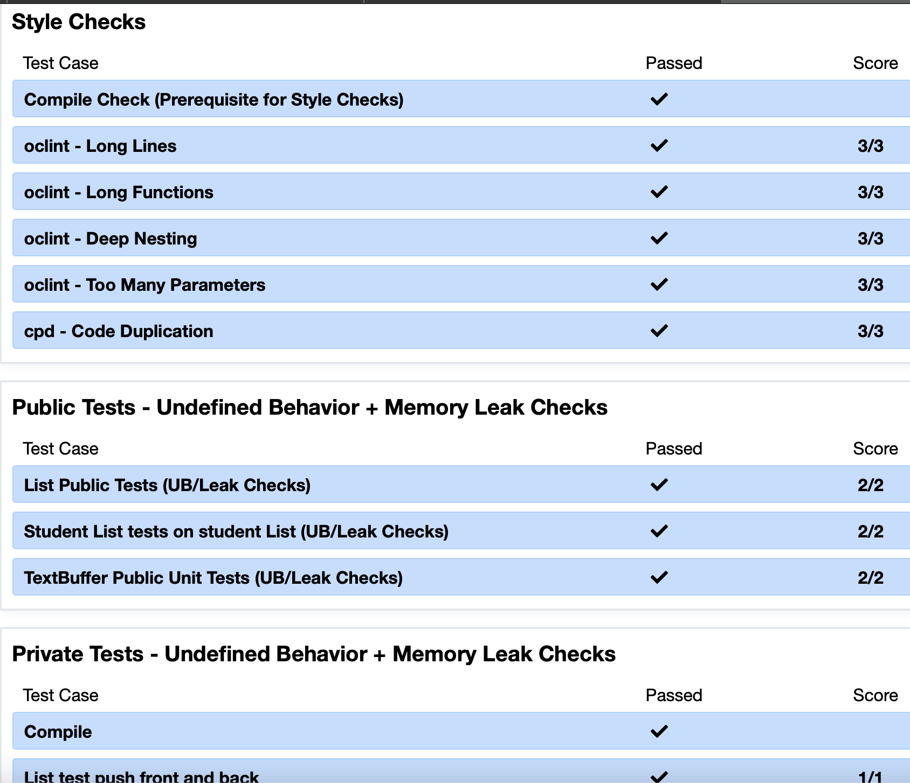

Hello! I'm Rowan Thomas Hagey, originally from Darien, Connecticut. Growing up on the East Coast has shaped my love for the outdoors and my drive to make a positive impact in the world.
About Me

I'm currently a junior at the University of Michigan, where I'm majoring in Computer Science and minoring in Mathematics. I chose Michigan for its renowned programs, rigorous academics, and the vibrant campus life, including the football culture. Go Blue!

As a Computer Science major with a minor in Mathematics, I spend a lot of time on school-driven CS projects and am now branching out into my own developments. My education is preparing me for a future where I can merge technical skills with creative problem-solving.

My goal is to become a software engineer focused on creating applications that improve daily life. I have a strong interest in front-end development, aiming to build software that is both functional and aesthetically pleasing.

I believe my purpose in life is to make those around me as happy as possible and to improve the world, even if it's just by helping a few people. This belief drives my ambition to create impactful and user-friendly software.
Outside of my academic and career pursuits, I am an active member of the Theta Xi fraternity. I love working out, hanging out with friends, and spending time outdoors. When I'm not busy with school, you can find me pursuing my passions, which you can explore further on my passions page.